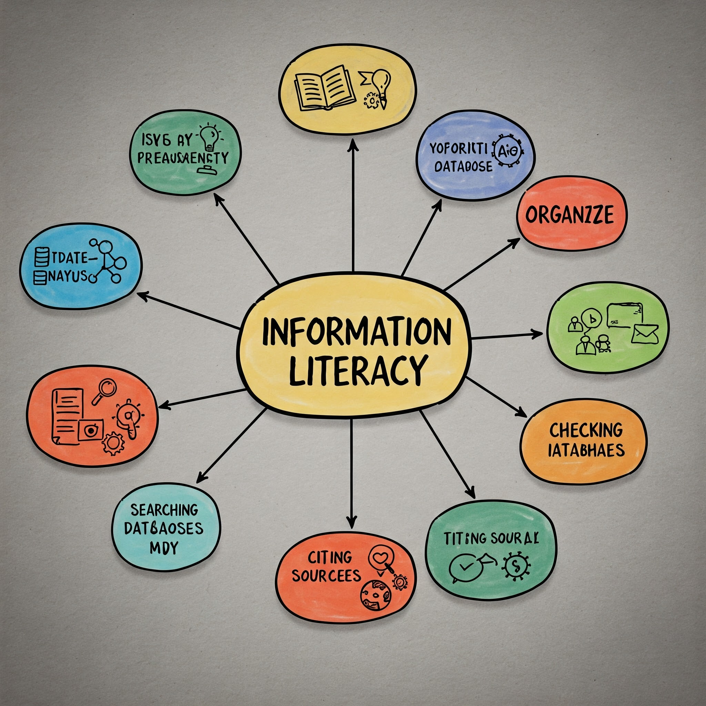
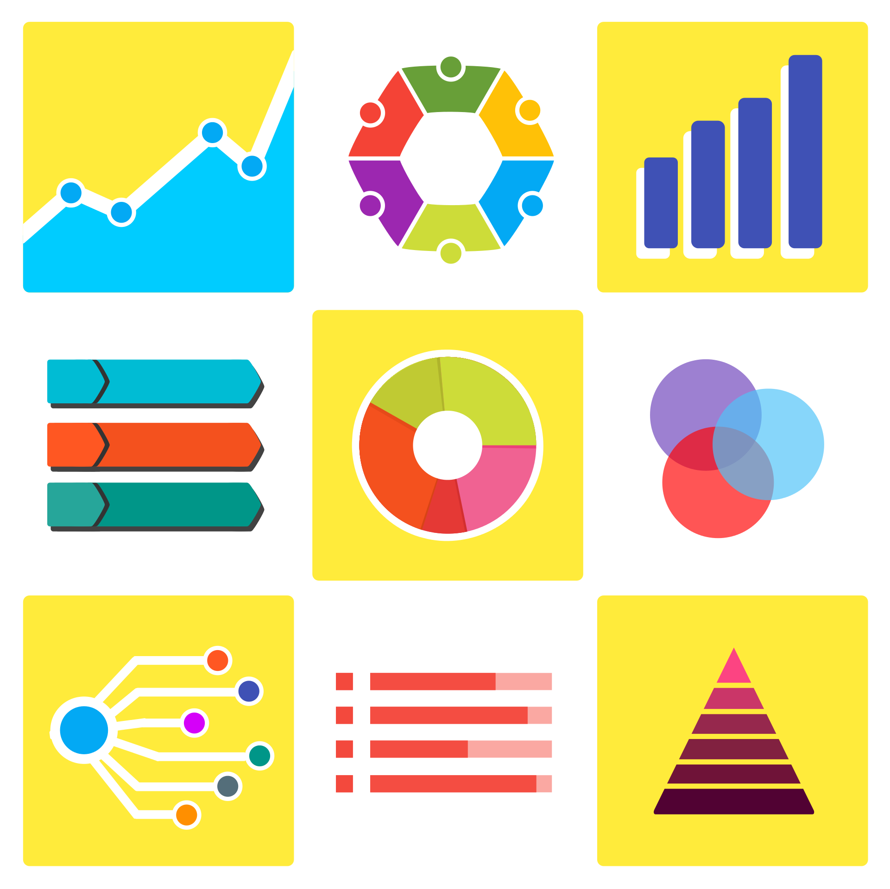

סיכום הרצאה 02 - צריכת מידע

הרצאה 02 - צריכת מידע
שלום לכולם, אני קרן, אנחנו בקורס אוריינות מידע, והיום אנחנו נדבר על הנושא של צריכת מידע. אוקיי, כשאנחנו
מדברים על אוריינות מידע, אנחנו רוצים להתחיל מהשאלה איך אנחנו בכלל צריכים לצרוך מידע. המטרה שלנו צריכה תמיד
להיות לצרוך את המידע בצורה שהיא כמה שיותר ממוקדת, אחראית וביקורתית. בואו נתמקד רגע במילים האלה. צריכת מידע
ממוקדת, כי ברור לנו שיש מקומות שמחזיקים המון מידע בתוכם, כמו האינטרנט או ספרייה, אבל זה עדיין לא מספיק. צריך
לדעת איך להתמקד בתוך כל הבלאגן הזה כדי למצוא את המידע הרלוונטי. לדוגמה, אם אני מחפש מידע על השפעת מדיה חברתית על צעירים, אני לא אקרא כל מאמר על מדיה חברתית, אלא אתמקד במאמרים שמתייחסים ספציפית לצעירים. צריכת מידע אחראית, כי ברור לנו שיש מקורות
לא אמינים. למעשה, ככל שמהפכת המידע התקדמה ולכולנו יש גישה לאינטרנט, לכל אחד יש יכולת להפיץ מידע כאהבת נפשו,
גם מידע לא נכון, בטעות או במודע. אנחנו רוצים להגיע למידע אמין, ואנחנו נרצה בתורנו להעביר מידע באופן אחראי.
לדוגמה, לפני שאני משתף כתבה חדשותית, אני אבדוק באתרים נוספים או מקורות מהימנים אחרים שהמידע אכן נכון.
וצריכת מידע ביקורתית, כי זה לא רק לקרוא את המידע הרלוונטי ממקור אמין, זה גם לדעת להפעיל חשיבה ביקורתית באופן
שבו אנחנו מסיקים מסקנות מתוך המידע הזה. אז זה מה שאדבר עליו היום, על צריכת מידע. לדוגמה, אם אני קורא מחקר שטוען ש"קפה מזיק לבריאות", אני לא מיד אפסיק לשתות קפה, אלא אשאל שאלות כמו: מי מימן את המחקר? מה הייתה המתודולוגיה? האם יש מחקרים אחרים עם מסקנות שונות?
כיצד אנו צורכים מידע ביומיום?
נתחיל מלשאול, ביומיום שלנו, איך אנחנו צורכים מידע חדש שאנחנו מעוניינים לצרוך אותו? אם יש משהו שאני רוצה
לדעת, איפה אני אלך לחפש את התשובה? אם בעבר התשובה לזה הייתה ללכת לספרייה או לשאול מישהו שיודע, היום אם
אני אבקש מכם לגלות משהו, לספר לי משהו חדש שאתם עוד לא יודעים, כנראה שהמקום שאתם תלכו אליו יהיה גוגל או
עולמות הבינה המלאכותית כמו ChatGPT. לדוגמה, אם אני רוצה לדעת מה מזג האוויר היום, סביר להניח שאפתח את גוגל או אפליקציית מזג אוויר בטלפון.
גוגל טרנדס (Google Trends)
אנחנו מדברים על גוגל, אנחנו מדברים רגע על השימוש הרחב בו. כשמסתכלים על השימוש של האוכלוסייה כולה בגוגל, זה יכול
ללמד אותנו הרבה מאוד על תהליכים בחברה. אחד הכלים לזה הוא גוגל טרנדס, כלומר מגמות, והוא מאפשר לנו להבין מה
מעסיק אוכלוסיות שלמות לפי מגמות החיפוש. אז לצורך זה נסתכל על שני גרפים ורק נסביר רגע איך לקרוא אותם. ציר
ה-X למטה זה בעצם הזמן. אנחנו רואים התקדמות לאורך זמן, וציר ה-Y מראה לנו בעצם את כמות החיפושים של מונח מסוים.

אז כל גרף הוא בעצם למונח ספציפי, ובגרף למעלה אני רואה מגמה של נושא מסוים שכל שנה נמצא בעלייה מאוד חדה לקראת
ספטמבר, ואז ירידה כמעט מוחלטת. בגרף למטה אנחנו רואים נושא שעלה באופן משמעותי ב-2015, ונשאר די חזק עד 2021.
בשני המקרים האלה, הגרפים מסתכלים רק עד שנת 2022, וכנראה שהגרף הזה היה נראה אחרת לגמרי היום. במקרה הראשון
חיפשנו "דבש", ובמקרה השני "דונלד טראמפ". לדוגמה, העלייה בחיפוש אחר "דבש" בספטמבר קשורה לרוב לראש השנה וחגי תשרי, בהם נהוג לאכול דבש.
אנחנו יכולים לשים נתונים של מונחים שונים גם על פני אותו גרף. למשל בדוגמה הזאת, יש לנו שלושה קווים ששלושתם
מראים עלייה ביחד, בבת אחת, בתחילת 2020. אפשר לראות שהקו הצהוב לא היה נמוך מדי בהתחלה, אבל הקו הכחול והאדום
היו כמעט לא קיימים. העלייה המשמעותית ביותר שאנחנו רואים זה כמובן הקו הכחול, שאולי ניחשתם, זה הקורונה. הקו
הצהוב זה נטפליקס, הוא היה קיים שם גם קודם, אהבנו אותו עוד לפני, אבל כנראה שהוא התחזק בתקופת הסגרים. והקו
האדום זה זום, בעצם נכנס לחיים שלנו בבת אחת, ובהדרגה חזר ונהיה פחות משמעותי.
אז למעשה גוגל טרנדס מאפשר לנו לזהות ממש מגמות חברתיות ולעקוב אחרי חיפושים. אפשר לחתוך אותו לפי נקודות שונות
בזמן, לפי אזורים ודמוגרפיות, ואני מזמינה אתכם להתנסות בו בעצמכם ולחפש כל מיני דברים מעניינים. לדוגמה, אפשר לבדוק איך השתנו החיפושים אחר "בחירות" לפני ובמהלך תקופת בחירות בישראל.
איך רכשנו את הידע שכבר יש לנו?
אבל בואו נצא רגע מגוגל, נחשוב שנייה על הדברים שאתם כבר יודעים. למשל, בערב חג יש יותר פקקים, מסכימים? נראה לי
שכולכם יכולים להגיד שכנראה שכן. הצבע של הפינגווינים הוא שחור ולבן, דרווין הוא אבי תורת האבולוציה. איפה למדנו
את הדברים האלה? מישהו לימד אותנו את זה? מאיפה צברנו וגיבשנו את כל הידע הזה? לדוגמה, ידענו על פקקים בערב חג אולי מניסיון אישי או סיפורים ששמענו, ידע על פינגווינים מספרי ילדים או סרטים דוקומנטריים, וידע על דרווין משיעורי היסטוריה או ביולוגיה בבית הספר.
דרכים לרכישת ידע
אנחנו בעצם נדבר עכשיו על דרכים שונות שבהן בני אדם רוכשים ידע על העולם. יש הרבה מאוד דרכים ואנחנו נתמקד
בחמש: שיטת הדבקות, הסמכות, השיטה האינטואיטיבית, השיטה האמפירית והשיטה המדעית.
שיטת הדבקות (Tenacity)
נתחיל משיטת הדבקות. הרעיון פה זה שבני אדם נוטים לדבוק במידע שכבר קיים אצלם, מבלי להטיל בו ספק, מבלי לבקר
אותו, ומבלי לבחון מידע נוסף. למשל, האמונה שאם חתול שחור עבר בדרכנו, זה מביא למזל רע. הבעיה בזה, היא
שהאינפורמציה היא לא בהכרח נכונה ואין בחינה של המידע שאנחנו מסתמכים עליו. לדוגמה, אם מישהו גדל בבית שבו האמינו בגלגול נשמות, הוא עשוי להמשיך להאמין בכך גם כמבוגר, בלי לבדוק אם יש לכך בסיס מדעי.
שיטת הסמכות (Authority)
שיטת הסמכות, היא שיטה שאומרת שיש מקור סמכות, וממנו אנחנו שואבים את המידע, מבלי לבדוק אותו בעצמנו. למשל,
אני סומכת על מה שכתוב בעיתון, או על מה שאמר לי הרופא או הפסיכולוג, וזה מקור רוב הידע שלנו. הבעיה בזה, היא
שאנחנו נותנים כוח רב למקור הסמכות, גם במקרים שבהם הסמכות לא קשורה לידע, בלי לבדוק אם הסמכות היא אמיתית.
ככה למשל, אנחנו יכולים לראות רופאים מתבטאים בנושאים פוליטיים, או פוליטיקאים מתבטאים בנושאים של רפואה. לדוגמה, אנחנו נוטים להאמין למה שפרופסור אומר בתחום התמחותו, אך פחות סביר שנאמין לו בנושא שאינו קשור לתחום שלו, כמו חוות דעת על מכונית חדשה.
השיטה האינטואיטיבית
השיטה הבאה שנדבר עליה, היא השיטה האינטואיטיבית. אנחנו בעצם מקבלים אינפורמציה מסוימת כנכונה, כי היא מתאימה
לשכל הישר, או תואמת את תחושת הבטן שלנו. הבעיה בזה, היא שאנחנו מושפעים מהטיות קוגניטיביות. כלומר, אנחנו
נותנים משקל יתר למה שמוכר לנו מהסביבה הפוליטית הקרובה אלינו, אנחנו מושפעים מהציפייה שלנו, ואנחנו מחפשים
תבניות מוכרות להישען עליהן. לדוגמה, אם אנחנו מאמינים שמזג האוויר תמיד חם בקיץ, נתעלם מיום קיץ קריר ונניח ש"זה רק חריג". או אם אנחנו מצפים שקבוצת ספורט מסוימת תנצח, נפרש נתונים בצורה שתתמוך בציפייה הזו.
השיטה האמפירית
השיטה הבאה, היא השיטה האמפירית. היא בעצם מדברת על רכישת ידע דרך תצפיות על העולם, ועל הסביבה שלנו, באמצעות
החושים, באמצעות ההתנסות האישית שלנו. הבעיה בזה, היא שהחושים שלנו יכולים לפעמים להטעות אותנו, ולא כל מידע
נגיש באמצעות התנסות אישית, וצפייה ישירה. לדוגמה, אם ראינו פעם אחת אדם מבוגר מתקשה בשימוש בטכנולוגיה, אנחנו עלולים להסיק באופן גורף ש"מבוגרים לא מסתדרים עם טכנולוגיה", למרות שזו הכללה לא מדויקת. או, אם נטעם עוגה פעם אחת ולא נאהב אותה, נניח ש"אני לא אוהב עוגות", למרות שאולי יש סוגי עוגות אחרים שכן נאהב.
השיטה המדעית
השיטה המדעית, יכולה להתבסס על כל השיטות שדיברנו עליהן בהעלאת רעיונות ופיתוח תיאוריות, אבל היא תתבסס על
בחינה של היפותזות בתנאים מבוקרים. תנאים מבוקרים, כלומר, בשליטה. כמובן שגם השיטה המדעית, לא חפה מבעיות
והטיות שצריך לשים לב אליהן, ובהמשך הקורס, אנחנו נרחיב את הדיון עליה. לדוגמה, במחקר רפואי, כדי לבדוק יעילות של תרופה חדשה, החוקרים יחלקו את המשתתפים לקבוצות (תרופה ופלצבו), יבצעו מעקב בתנאים זהים ככל האפשר וינתחו את התוצאות באופן סטטיסטי כדי להסיק מסקנות תקפות.
חיפוש מידע באינטרנט
יש הרבה מאוד מקורות מידע שניתן לחשוב עליהם, חלקם רחבים וכלליים, חלקם ממוקדים לנושא מסוים. יש הרבה חשיבות
לחיפוש מקורות אמינים, אבל אנחנו נדבר רגע על הצד הטכני של חיפוש המידע. לדוגמה, מקורות מידע יכולים להיות אתרי חדשות, מאגרי מידע אקדמיים, בלוגים, רשתות חברתיות ועוד. חשוב להבחין בין מקורות אמינים כמו אתרי חדשות מוכרים או מאמרים אקדמיים, למקורות פחות אמינים כמו בלוגים אישיים או פוסטים ברשתות חברתיות, במיוחד כשמחפשים מידע מהימן לצורך עבודה אקדמית או החלטות חשובות.
חיפושים מתקדמים בגוגל
בגוגל יש כל מיני שיטות קטנות וכלים שעוזרים לנו לחפש בצורה יעילה יותר. למשל, כשאנחנו משתמשים במילה AND
באנגלית, היא אומרת "גם וגם", כלומר אנחנו רוצים מקורות מידע שיש בהם את המילים "מדיה חברתית" וגם את המילה
"בריאות". לדוגמה, חיפוש "מדיה חברתית AND בריאות" יציג תוצאות העוסקות בהשפעת מדיה חברתית על הבריאות. אם אני משתמשת במילה OR, אז אני מוכנה לוותר על אחד משני המונחים, אבל לפחות אחד מהם צריך להיות נוכח.
אז אני כותבת "מדיה חברתית OR רשתות חברתיות". ולפחות אחד מהמונחים האלה חייב להיות בתוצאות החיפוש שלי. לדוגמה, חיפוש "מדיה חברתית OR רשתות חברתיות" יכלול תוצאות שמשתמשות במונח "מדיה חברתית", או "רשתות חברתיות", או בשניהם.
המילה NOT היא בעצם מילה שמאפשרת לי להגיד אני לא מעוניינת בנוכחות של מילה מסוימת. למשל, אני מאוד מעוניינת
לחקור מדיה חברתית, אבל אני לא רוצה לדבר על פייסבוק. נגיד, דיברו כבר מספיק על פייסבוק ואני רוצה בעצם לחפש
מדיה חברתית בלי המילה פייסבוק. אז אני מחפשת "מדיה חברתית" ומשתמשת במילה NOT כדי להוריד חיפושים שכוללים את
המילה "פייסבוק". באותו אופן אני יכולה לחפש גם לפי סוג קובץ, אתר וכדומה, ויש עוד כל מיני שיטות קטנות
לדברים שאפשר ככה לחפש לפי מה שמעניין אתכם. לדוגמה, חיפוש "מדיה חברתית NOT פייסבוק" יציג תוצאות על מדיה חברתית, אך יסנן תוצאות שכוללות את המילה "פייסבוק". אפשר גם לחפש לפי סוג קובץ, למשל "אוריינות מידע filetype:pdf" יחפש קבצי PDF בנושא אוריינות מידע.
אני מציעה לכם לנסות להשתמש בדברים האלה כשאתם מחפשים מידע לעבודות באקדמיה, הם יכולים מאוד מאוד לשפר את החיפוש
שלכם.
סיכום
נסכם, בני אדם צורכים מידע בדרכים רבות, הרבה מהן כמו שראינו מבוססות על האינטרנט. חשוב למצוא מקורות אמינים
לצריכת מידע, אבל חשוב לא פחות להסתמך על היכולת שלנו לבדוק את המידע שמגיע אלינו ולשאול אם הוא הגיוני ונכון.
דיברנו היום קצת על איך בני אדם צורכים מידע, ובהמשך הקורס אנחנו נדבר על איך לגשת למידע בצורה ביקורתית. אז
להיום אנחנו סיימנו, שיהיה לכם שבוע טוב, ובהצלחה. לסיכום, זכרו תמיד לצרוך מידע בצורה ממוקדת, אחראית וביקורתית, ולהשתמש בכלים כמו גוגל טרנדס וחיפוש מתקדם בגוגל כדי לשפר את איכות החיפוש שלכם.